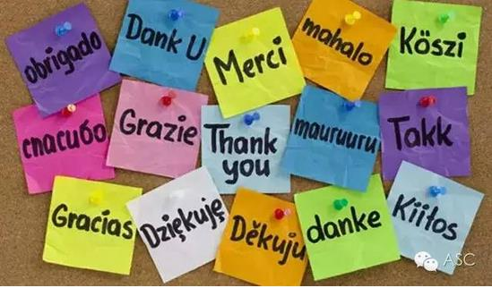
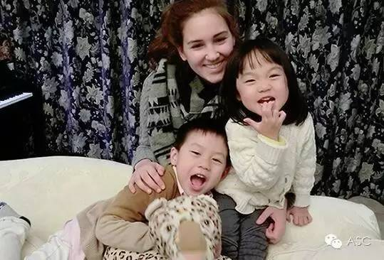

互惠动态
|
|
让3岁孩子学英语，是对是错？专家是这么说的！
望子成龙、望女成凤是每位父母的心愿。英语作为国际通用语言，不会英语就等于少了一种生存技能，这其中的重要性不言而喻，英语教育的低龄化成为我国英语教育的一种趋势。那让3岁孩子学英语，是对还是错？下面就与我一起看看专家是怎么说的！
3岁的孩子适合学习英语吗? 专家是这样解释的
咱们3岁的宝宝还是适合开始学习外语的。为什么这么说呢？
其实，科学家早已对大脑中负责语言学习的部位进行过研究，研究表明这一部位在幼儿脑内对语言辨别和模仿等方面都非常灵敏，而其灵敏性却会随着年龄增长而直线下降，所以3-6岁是获得外语的最佳时期。
专家还提醒：宝宝学英语,千万不要逼
我们都知道，对于3岁的孩子来说，玩是他们感受生活、建立快乐人生观和自信的时候，而不是一连串知识的学习，如果作为家长的你违背这个规律强硬地让孩子学习，会让孩子丧失起码的信任感和安全感，甚至影响孩子完整人格的形成。

所以，即使孩子在3岁以后学英语，我们也一定要注意方式方法，培养学英语的兴趣，提高语言学习的敏感性，而不是把它作为一门工具来学，同时不能以考证书什么的来衡量他们的学习效果。
专家建议：3岁的宝宝，这样学英语才有效！
你知道吗？语言规律里，无处不在地包含着民族习惯、文化背景、思维方式。因此，学习语言，从来不是学习语言本身，学的是一种完全不同的看待世界的方式，只有语言，可以把这种方式，潜移默化成一种本能。
所以，宝宝学习英语所处的环境非常重要，如果没有好的英语环境，建议你们可以选择请互惠生。因为，互惠生除了给家庭和孩子带来一个天然的外语环境，自然也带来了代表她／他的国家和文化的生活方式、习俗传统，带来了代表他／她家庭背景和成长环境下的教育观念和处世哲学。

另外，通过与外国互惠生在一起生活，我们的宝贝对于国外生活的体验是真实的、具体的，早早熟悉并且习惯了国外的风俗礼仪、生活习惯，这必将为以后的留学生活打下良好的基础。
亲，如果家里没有好的英语环境，又希望宝贝早早学习英语，那么，考虑ASC互惠生吧---陪伴照顾您孩子的成长，做您宝贝全天候的外语伙伴！

关于ASC
暑假来，开心来，你的暑假有计划了吗？你还在为外语作业而发愁吗？你想请个欧美的哥哥姐姐陪你 do homework 吗？那么，加入我们ASC吧！我们把国外的互惠生请来家庭里，照顾自家的孩子，从小培养外文的语言环境，为孩子出国，全家移民打下优良的基础。你还在等什么？机会难得，名额有限，我们的服务更是面向全国家庭哦！
上海中心：
Tel: 86-21-61116069
南京中心：
Tel: 86-25-66065662
手机：15601666586
（可加微信）
Q Q：3259637585
微信：asc-center
邮箱：info@asc-center.com
网站：www.asc-aupair.com